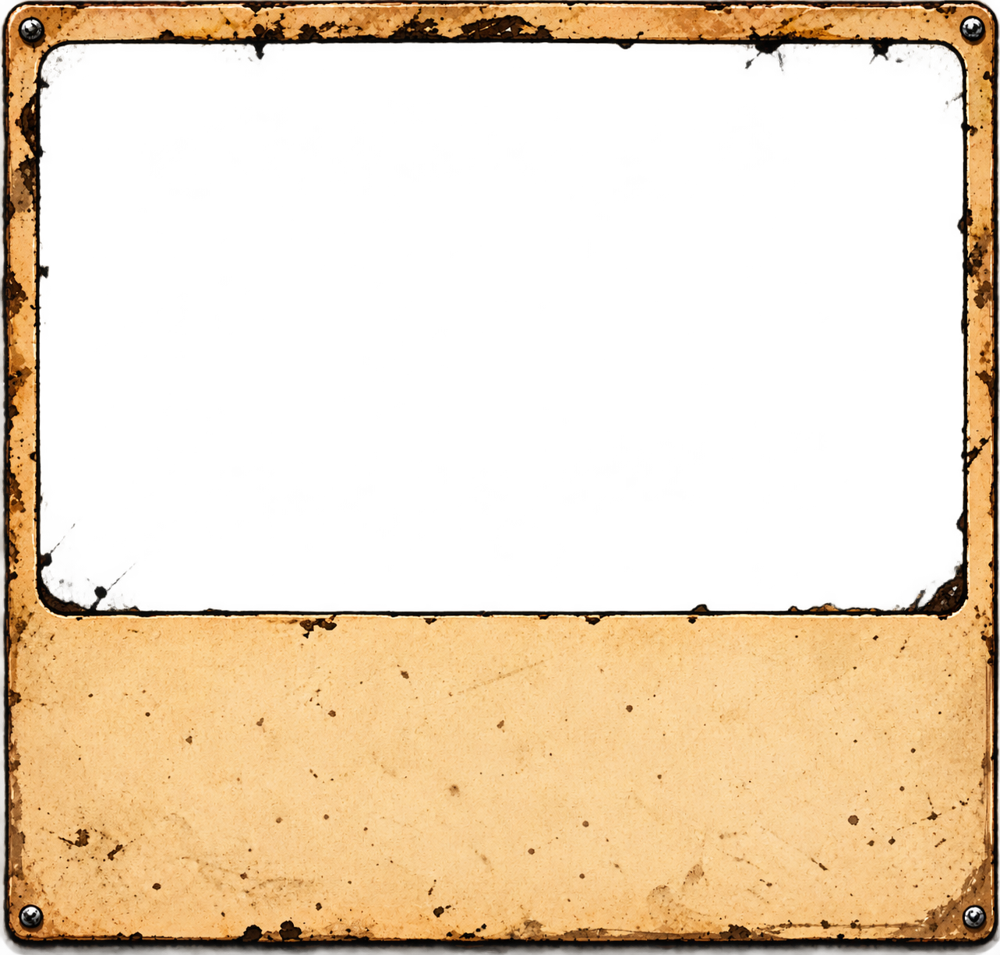

The Morning After

He woke up in a scrapyard. He doesn't know where he is or what happened last night. He's taking it remarkably well.
View Next
WORMS ON ACID · FRAME TEST V7
The raw frame stays at its original proportions. A parchment backing fills the transparent header, the scene sits in the opening, and the story and button sit below.
He woke up in a scrapyard. He doesn't know where he is or what happened last night. He's taking it remarkably well.
View Next
Prototype only · Live website unchanged.